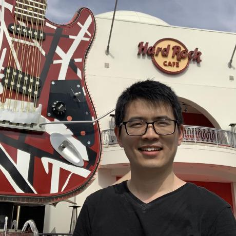
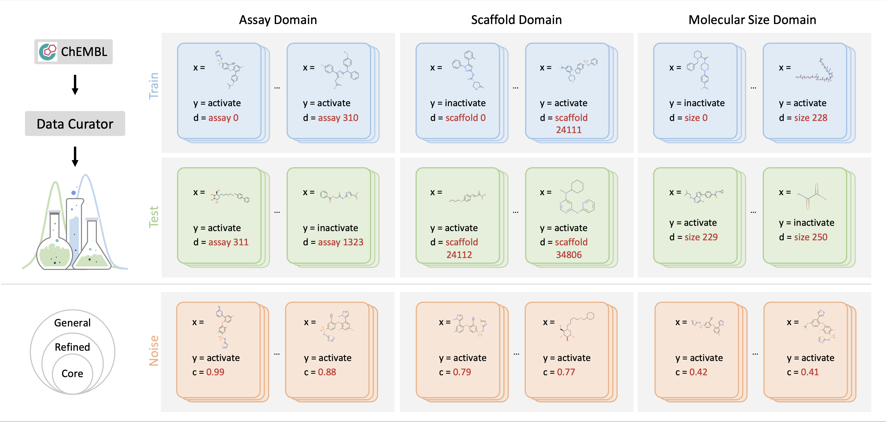

|
 If you are interested in collaborating or discussing with me, please feel free to drop me an email :-) |
Hi, this is Yatao (). I am a senior research scientist at Tencent AI Lab.
I received my Doctor of Sciences degree from the Institute for Machine Learning at ETH Zürich.
I was supervised by Prof. Joachim M. Buhmann and also worked closely with Prof. Andreas Krause (PhD co-examiner). Before that I obtained both of my M.Sc.Eng. and B.Sc.Eng. from Shanghai Jiao Tong University under the supervision of Prof. Yuncai Liu.
|
Job Openings: I am looking for highly motivated research interns on topics about graph neural nets, interpretable AI, set function learning, energy-based learning, drug AI, OOD generalization or other related ones. The position will be Shenzhen based. Feel free to send your C.V. to me.
◽Meanwhile, I am happy to host (remote) undergraduate/graduate visitors.
News
- Jan. 2022: "Drug AI OOD Dataset Curator and Benchmark" Paper "DrugOOD" released, here comes the project page. Will be continuously updated.
- Jan. 2022: Two papers accepted by ICLR 2022, congratulations Xinyuan!
- Dec. 2021: Participate in the "Key Issues of AI Ethics and Their Solutions" Symposium (“AI伦理关键问题及其解决路径”学术研讨会) at the Southern University of Science and Technology.
- Nov. 2021: Paper on p-Laplacian Based Graph Neural Networks released.
- Nov. 2021: Paper on Independent SE(3)-Equivariant Models for End-to-End Rigid Protein Docking released.
- Sep. 2021: Paper on GCN robust training method accepted by NeurIPS 2021, congratulations Heng!
- June. 2021: Paper on Energy-based learning for cooperative games released.
- April. 2021: Paper on Self-distilling GNNs accepted by IJCAI 2021, congratulations Yuzhao!
- April. 2021: we gave a tutorial on Advanced Deep Graph Learning at WWW 2021: Advanced Deep Graph Learning: Deeper, Faster, Robuster, and Unsupervised.
- Dec. 2020: paper presentated at NeurIPS2020 on self-supervised graph Transformers for drug discovery.
- Apr. 2019: paper accepted by ICML19.
- Oct. 2018: papers accepted by NeurIPS18 and BNP@NeurIPS18.
- Sep. 2017: paper "Continuous DR-submodular Maximization: Structure and Algorithms" accepted by NeurIPS 2017.
- Since Jun. 2015, I am associated Fellow of the Max Planck ETH Center for Learning Systems.
Academic activities
Conference Reviewing/PC
- ICML 2022, ICLR 2022, CVPR 2022, AAAI 2022, AISTATS 2022, NeurIPS 2021, ICCV 2021, CVPR 2021, AAAI 2021, NeurIPS 2020, AAAI 2020, NeurIPS 2019, ICML 2019, AISTATS 2019, STOC 2018, ITCS 2017, NIPS 2016
Journal Reviewing
- JMLR
Teaching
Courses@ETH Zürich
- TA to Prof. Thomas Hofmann
"Computational intelligence lab" (Spring 2018) - TA to Prof. Joachim M. Buhmann
"Machine Learning" (Fall 2017) [website] - TA to Prof. Thomas Hofmann
"Computational intelligence lab" (Spring 2017) [website] - TA to Prof. Joachim M. Buhmann
"Machine Learning" (Fall 2016) - TA to Prof. Thomas Hofmann
"Computational intelligence lab" (Spring 2016) [website] - TA to Prof. Joachim M. Buhmann
"Machine Learning" (Fall 2015) - TA to Prof. Joachim M. Buhmann
"Introduction to Machine Learning" (Fall 2014)
Selected Papers & Code
-
DrugOOD: Out-of-Distribution (OOD) Dataset Curator and Benchmark for AI-aided Drug Discovery--A Focus on Affinity Prediction Problems with Noise Annotations
Preprint 2022.@ARTICLE{2022arXiv220109637J, author = {{Ji}, Yuanfeng and {Zhang}, Lu and {Wu}, Jiaxiang and {Wu}, Bingzhe and {Huang}, Long-Kai and {Xu}, Tingyang and {Rong}, Yu and {Li}, Lanqing and {Ren}, Jie and {Xue}, Ding and {Lai}, Houtim and {Xu}, Shaoyong and {Feng}, Jing and {Liu}, Wei and {Luo}, Ping and {Zhou}, Shuigeng and {Huang}, Junzhou and {Zhao}, Peilin and {Bian}, Yatao}, title = "{DrugOOD: Out-of-Distribution (OOD) Dataset Curator and Benchmark for AI-aided Drug Discovery -- A Focus on Affinity Prediction Problems with Noise Annotations}", journal = {arXiv e-prints}, keywords = {Computer Science - Machine Learning, Computer Science - Artificial Intelligence, Quantitative Biology - Quantitative Methods}, year = 2022, month = jan, eid = {arXiv:2201.09637}, pages = {arXiv:2201.09637}, archivePrefix = {arXiv}, eprint = {2201.09637}, primaryClass = {cs.LG}, adsurl = {https://ui.adsabs.harvard.edu/abs/2022arXiv220109637J}, adsnote = {Provided by the SAO/NASA Astrophysics Data System} } -
On Self-Distilling Graph Neural Network
IJCAI 2021. -
Graph Information Bottleneck for Subgraph Recognition
ICLR 2021. -
Self-Supervised Graph Transformer on Large-Scale Molecular Data
NeurIPS 2020. -
From Sets to Multisets: Provable Variational Inference for Probabilistic Integer Submodular Models
ICML 2020.@inproceedings{sahin2020sets, title={From Sets to Multisets: Provable Variational Inference for Probabilistic Integer Submodular Models}, author={Sahin, Aytunc and Bian, Yatao and Buhmann, Joachim M and Krause, Andreas}, booktitle={Proceedings of the 37th International Conference on Machine Learning}, year={2020}, publisher={PMLR}, } -
Provable Non-Convex Optimization and Algorithm Validation via Submodularity
Doctoral thesis, ETH Zurich.@phdthesis{bian2019provable, title={Provable Non-Convex Optimization and Algorithm Validation via Submodularity}, author={Bian, Yatao An}, year={2019}, school={ETH Zurich} } -
Optimal Continuous DR-Submodular Maximization and Applications to Provable Mean Field Inference
ICML 2019.@inproceedings{bian2019optimalmeanfield, title={Optimal Continuous DR-Submodular Maximization and Applications to Provable Mean Field Inference}, author={Bian, Yatao A. and Buhmann, Joachim M. and Krause, Andreas}, booktitle={Proceedings of the 36th International Conference on Machine Learning}, pages={644--653}, year={2019}, volume={97}, series={Proceedings of Machine Learning Research}, address={Long Beach, California, USA}, month={09--15 Jun}, publisher={PMLR}, } -
CoLA: Decentralized Linear Learning
NeurIPS 2018.@inproceedings{he2018cola, title={COLA: Communication-Efficient Decentralized Linear Learning}, author={He, Lie and Bian, An and Jaggi, Martin}, booktitle={Advances in Neural Information Processing Systems (NeurIPS)}, pages = {4537--4547}, year={2018} } -
A Distributed Second-Order Algorithm You Can Trust
ICML 2018.@inproceedings{Celestine2018trust, title={A Distributed Second-Order Algorithm You Can Trust}, author={D{\"u}nner, Celestine and Lucchi, Aurelien and Gargiani, Matilde and Bian, An and Hofmann, Thomas and Jaggi, Martin}, booktitle={ICML}, pages={1357--1365}, year={2018} } -
Continuous DR-submodular Maximization: Structure and Algorithms
NIPS 2017.@inproceedings{biannips2017nonmonotone, title={Continuous DR-submodular Maximization: Structure and Algorithms}, author={Bian, An and Levy, Kfir Y. and Krause, Andreas and Buhmann, Joachim M.}, booktitle={Advances in Neural Information Processing Systems (NIPS)}, pages={486--496}, year={2017} } -
Guarantees for Greedy Maximization of Non-submodular Functions with Applications
ICML 2017.@inproceedings{bianicml2017guarantees, title={Guarantees for Greedy Maximization of Non-submodular Functions with Applications}, author={Bian, Andrew An and Buhmann, Joachim M. and Krause, Andreas and Tschiatschek, Sebastian}, booktitle={International Conference on Machine Learning (ICML)}, pages={498--507}, year={2017} } -
Guaranteed Non-convex Optimization: Submodular Maximization over Continuous Domains
AISTATS 2017.@inproceedings{bian2017guaranteed, title={Guaranteed Non-convex Optimization: Submodular Maximization over Continuous Domains}, author={Bian, Andrew An and Mirzasoleiman, Baharan and Buhmann, Joachim M. and Krause, Andreas}, booktitle={International Conference on Artificial Intelligence and Statistics (AISTATS)}, pages={111--120}, year={2017} } -
Model Selection for Gaussian Process Regression
GCPR 2017.@inproceedings{gorbach2017model, title={Model Selection for Gaussian Process Regression}, author={Gorbach, Nico S and Bian, Andrew An and Fischer, Benjamin and Bauer, Stefan and Buhmann, Joachim M}, booktitle={German Conference on Pattern Recognition}, pages={306--318}, year={2017} } -
Information-Theoretic Analysis of MAXCUT Algorithms
ITA 2016.@inproceedings{bian2016information, title={Information-theoretic analysis of MaxCut algorithms}, author={Bian, Yatao and Gronskiy, Alexey and Buhmann, Joachim M}, booktitle={IEEE Information Theory and Applications Workshop (ITA)}, pages={1--5}, url={http://people.inf.ethz.ch/ybian/docs/pa.pdf}, year={2016} } -
Greedy MAXCUT Algorithms and their Information Content
ITW 2015.@inproceedings{ITW15_BianGB, author = {Yatao Bian and Alexey Gronskiy and Joachim M. Buhmann}, title = {Greedy MaxCut algorithms and their information content}, booktitle = {IEEE Information Theory Workshop (ITW) 2015, Jerusalem, Israel}, pages = {1--5}, year = {2015} } -
Parallel Coordinate Descent Newton for Efficient L1-Regularized Minimization
Technical report 2013.@article{bian2013parallel, title={Parallel Coordinate Descent Newton Method for Efficient L1-Regularized Minimization}, author={Bian, An and Li, Xiong and Liu, Yuncai and Yang, Ming-Hsuan}, journal={arXiv preprint arXiv:1306.4080}, year={2013} } -
Bundle CDN: A Highly Parallelized Approach for Large-scale L1-regularized Logistic Regression
ECML 2013.@inproceedings{ecmlBian13, author = {Yatao Bian and Xiong Li and Mingqi Cao and Yuncai Liu}, title = {Bundle CDN: A Highly Parallelized Approach for Large-Scale L1-Regularized Logistic Regression}, booktitle = {ECML/PKDD}, year = {2013}, pages = {81-95} } -
Parallelized Annealed Particle Filter for Real-Time
Marker-Less Motion Tracking Via Heterogeneous Computing
ICPR 2012.@inproceedings{icprbian12, author = {Yatao Bian and Xu Zhao and Jian Song and Yuncai Liu}, title = {Parallelized Annealed Particle Filter for real-time marker-less motion tracking via heterogeneous computing}, booktitle = {ICPR}, year = {2012}, pages = {2444-2447} } -
Digitize Your Body and Action in 3-D at Over 10 FPS: Real Time Dense
Voxel Reconstruction and Marker-less Motion
Tracking via GPU Acceleration
Champion technical report of AMD China Accelerated Computing Contest, 2011 [demo].
@article{songbian2013digitize, title={Digitize Your Body and Action in 3-D at Over 10 FPS: Real Time Dense Voxel Reconstruction and Marker-less Motion Tracking via GPU Acceleration}, author={Song, Jian and Bian, Yatao and Yan, Junchi and Zhao, Xu and Liu, Yuncai}, journal={arXiv preprint arXiv:1311.6811}, year={2013} }
Research Projects
Ongoing Projects:
The problem of distribution shift is prevalent in various tasks of AI-aided drug discovery. For example, for the task of structure-based virtual screening, the models are often trained on data of known protein targets but have to be tested on unknown targets. Meanwhile, the current model backbone of Drug AI is the graph neural networks (GNNs).
We have built an OOD Dataset Curator and Benchmark for AI-aided Drug Discovery, for details please refer to the project page.
The main research directions include, but not limited to the following:
- Design OOD learning algorithms and theory, such as algorithms for domain generalization and domain adaptation scenarios, so that Drug AI algorithms could work efficiently in the scenarios of distribution shift.
- The combination of OOD learning and deep graph learning. On one hand, one could improve the generalization ability of deep graph learning algorithms in the OOD scenarios (graph OOD learning); on the other hand, one could utilize the strong modeling capabilities to design better OOD algorithms.

Parameterize generic set functions using neural backbones (such as DeepSet-style models and GNN-style models). Develop principled algorithms and theory for set function learning.
Previous Projects:
In charge of PAPF design, GPU implementation and optimization.
Proposed Parallelized Annealed Particle Filter (PAPF) algorithm via heterogeneous computing and built a real-time marker-less motion tracking system. Achieved 399 times speedup.
Team leader. Algorithm design, implementation and optimization.
Conducted human upper body pose estimation via generative algorithms . Incorporating generative models and discriminative algorithms to pursue better performance.

Links
(Non-)Convex Optimization
Machine Learning
- Machine Learning (Theory) by John Langford
- The blog of Moritz Hardt
- Probabilistic numerics
- The blog of Alex Smola
- Machine learning summer schools
MISC
- eth-gethired.ch: The job platform for talent made in Switzerland!
People